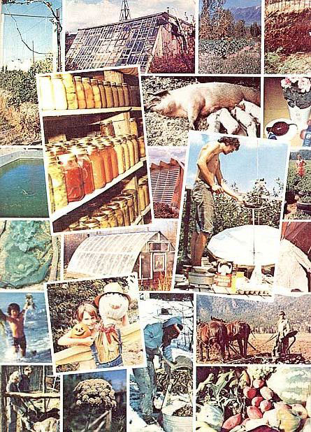

The $10,000 First Place Award has already gone to Dan, Mary Lou, Mark, and Brad Taylor of Parthenon, Arkansas.
Jo Frohbieter Mueller of Evansville, Indiana took home the $5,000 check for second place.
Three third place awards of $2,500 each have gone to Eliot and Susan Coleman of Harborside, Maine . . . Edwin Martin and Roberta Martin Starry of Randsburg, California . . . and the Rick Kasprzak family of Flagstaff, Arizona.
William Behr Mueller of Sacramento, California . . . Barbara and Roland Bergman-Hannay of Shepherds-town, West Virginia . . . Shirley Waskiewicz of Shinglehouse, Pennsylvania . . . Joy Costa of Hampshire, Tennessee . . . and Rennie M. Kessler of Pico Rivera, California were all awarded $500 fourth place prizes.
As you're probably aware, this competition was originally established in the fall of 1974, and judging (for a grand total of $5,000 in prize money) was initially planned for all entries received as of midnight, September 30, 1975. We received so few submissions (none of which really measured up to the rules laid down for the competition) by that first deadline, however, that we increased the total awards substantially (from $5,000 to $25,000) and extended the competition cutoff date to November 30, 1976.
That did it! Thanks to the increased prize money or thanks to the extended deadline or thanks to both, we finally closed the contest with a total of 287 submissions (over 100 of which flooded in during the competition's final two weeks).
And then came the really hard part: digesting this rather overwhelming mountain of words, ideas, concepts, hints, stories, autobiographies, photographs, diagrams, drawings, plans, and blueprints (and some sample apples, baked goods, and honey too!), and declaring the winners.
If you think that the judging of a competition like this is just a matter of throwing everything into one big pile and then randomly pulling out a winner . . . you've got another long and hard think coming. The incredible diversity (in age, experience, background, etc.) of the entrants -let alone the entries -was sometimes enough to be confusing.
We received a submission from a 71-year-old great-grandmother in North Carolina . . . and from a 14-year-old in California. From Ph.D.'s, college classes, and published authors. From families and individuals in the Ozarks, the desert, the mountains, the country, the suburbs, the city. From the East, the West, Hawaii, Alaska, Canada . . . even from as far away as Venezuela, New Zealand, and New Guinea!
And, of course, some of the entries were strictly back-to-the-land oriented . . others concentrated on greenhouse-based food production systems for the city . . . still others were combinations of both with some foraging thrown in for good measure . . . others yet were entirely visionary . . . and so on and so on and so on.
Luckily for us, we had some of the very best environmentalists, food and energy authorities, nutritionists, agricultural experts, and just downright knowledgeable roll-up-your-sleeves-and-get-to-it experimenters in these fields to help us judge this mind-numbing array of entries. They were David Brower, cofounder and president of Friends of the Earth and former executive director of the Sierra Club . . . John N. Cole, editor of Maine Times and co-author of the book, From the Ground Up. . . Gil Friend, co-director of the Institute for Local Self-Reliance in Washington, D.C . . . . Dr. Howard T. Odum, director of the University of Florida's Department of Environmental Engineering Sciences and author of the book, Environment, Power and Society. . . William Paddock, consultant in tropical agricultural development, former head of Latin American Affairs for the National Academy of Sciences, and coauthor of the book, Time of Famine: America and the World Food Crisis. . . Dr. John Todd, co-founder and director of the New Alchemy Institute East, a pioneering organization in the field of sustained food production ecosystems . . . Helen and Scott Nearing, "mother and father" of today's back-to-the-land movement and authors of scores of books, including Living the Good Life. . . and Ann Wigmore, founder and director of the Hippocrates Health Institute in Boston.
And, strangely enough (despite the fact that judges with environmental backgrounds tended to evaluate entries from that standpoint, those with heavy energy experience viewed the submissions from that frame of reference, etc.), the judging turned out to be far less difficult than we first expected.
That is: A submission which showed a high environmental awareness almost always also described a low technology, energy-saving, widely adaptable, nutritionally sound food system that received a top score from all our judges (who, by the way, were kept almost entirely isolated from each other and who-in fact-for the most part didn't even see each other or visit our offices at the same time during the judging). And those submissions which fell down in any one of the areas on which we placed premium values, almost always fell down in all the other areas too.
And so the top winners were picked and the prizes were awarded. But that's only the beginning!
For this particular competition was designed as much to stir us all to action as it was to find a handful of prize winners. And-from the comments that accompanied many of the 287 entries we received-we've been far more successful with that particular aim than we ever dared hope. Here are a few of those remarks:
"This was a project I just had to try. It was fun." . . . "Contest has been quite an incentive to work harder." . . . "Well, MOTHER, you have finally irritated me into action. If you have the guts to lay your money on the line, it's time more of us took up the challenge." . . . "My thanks for your nudge toward an experience I found very rewarding." . . . "It has been quite a challenge. I benefited simply by writing it down on paper. It served to get my ideas into a more comprehensive and usable form."
So it does seem that this competition has focused some time, talent, and resources on the development of food self-sufficiency systems . . . time, talent, and resources that wouldn't otherwise have been devoted to such an undertaking. And, although we don't yet know what the final outcome of that focusing will be . . . we have an inkling that the ultimate outcome will be very interesting indeed.
In the meantime, we expect to run excerpts from our top winners' and other entries in this magazine over the next year or so. Watch for them. You should find them stimulating, encouraging, informative, and definitely worth reading . . . and you'll find the first in this series of articles-excerpted from the Dan Taylor family's top prize entry-on page 84.
|
 |
|
|